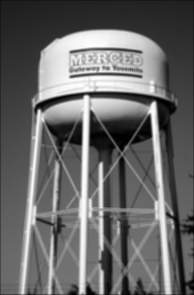
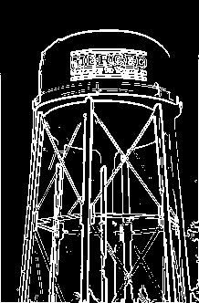

Name: Vedant Sinha
Lab Section: Thursday 10:30
Date: November 26, 2025
This lab explores linear spatial filtering and edge detection techniques in digital image processing. In Part 1, we implemented a spatial filtering function that applies convolution operations to images using various filter kernels, including impulse and averaging filters. In Part 2, we extended this implementation to perform edge detection by computing gradient magnitude using Sobel filters and applying a threshold to create binary edge images. The results demonstrate the effectiveness of spatial filtering for image smoothing and the gradient-based approach for edge detection.

Caption: The water tower image after applying a 3×3 averaging filter. The smoothing effect reduces noise and fine details while preserving the overall structure of the image.

Caption: Edge detection results on the water tower image using gradient magnitude thresholding with a threshold value of 200. The edges of the water tower structure, including its cylindrical body and support framework, are clearly detected.
The threshold value plays a critical role in edge detection performance:
The optimal threshold depends on the image characteristics and the application requirements. For the water tower image, a threshold around 200 provides clean edge detection of the main structural features.
The edge image created using our find_edges function differs from the Canny edge detector results in several important ways:
Differences observed:
Canny edge detector advantages:
The most challenging aspect of this assignment was correctly implementing the spatial_filter function with proper zero-padding and boundary handling. Specifically:
Once the spatial filter was working correctly, implementing the gradient magnitude and edge detection functions was more straightforward since they built upon the working spatial_filter function.
# Import pillow
from PIL import Image, ImageOps
# Import numpy
import numpy as np
from numpy import asarray
###############################################################################
# Create a simple image and filter it with an "impulse" filter which shouldn't change it.
###############################################################################
# Create a simple image with black (0) on the left half and white (255) on the right half.
simple_image_pixels = np.zeros(shape=(100, 100))
simple_image_pixels[:,50:100] = 255
# Display the simple image.
simple_image = Image.fromarray(np.uint8(simple_image_pixels))
simple_image.show()
# Create an "impulse" filter which has all zeros except for the middle entry.
impulse_filter_pixels = np.zeros(shape=(3, 3))
impulse_filter_pixels[1][1] = 1
# Import spatial_filter from Lab04_functions.
from Lab04_functions import spatial_filter
# Apply impulse filter to simple image.
filtered_image_pixels = spatial_filter( simple_image_pixels, impulse_filter_pixels)
# Create an image from numpy matrix filtered_image_pixels.
filtered_image = Image.fromarray(np.uint8(filtered_image_pixels.round()))
# Show the filtered image. This should be the same as the unfiltered simple image.
filtered_image.show()
###############################################################################
# Filter the simple image with an averaging filter which should smooth it.
###############################################################################
# Create a 3x3 averaging filters with all values equal to 1/9.
averaging_filter_pixels = np.zeros(shape=(3, 3))
for row in range(3):
for col in range(3):
averaging_filter_pixels[row][col] = 1/9
# Apply filter to image.
filtered_image_pixels = spatial_filter( simple_image_pixels, averaging_filter_pixels)
# Create an image from numpy matrix filtered_image_pixels.
filtered_image = Image.fromarray(np.uint8(filtered_image_pixels.round()))
# Show the filtered image.
filtered_image.show()
# Save the smoothed simple image.
filtered_image.save( 'simple_image_smoothed.tif' )
###############################################################################
# Filter the watertower image with the "impulse" filter which shouldn't change it.
###############################################################################
# Read the lab image from file.
lab_image = Image.open('watertower.tif')
# Show the image.
lab_image.show()
# Create numpy matrix to access the pixel values.
# NOTE THAT WE WE ARE CREATING A FLOAT32 ARRAY SINCE WE WILL BE DOING
# FLOATING POINT OPERATIONS IN THIS LAB.
lab_image_pixels = asarray(lab_image, dtype=np.float32)
# Apply impulse filter to simple image.
filtered_image_pixels = spatial_filter( lab_image_pixels, impulse_filter_pixels)
# Create an image from numpy matrix filtered_image_pixels.
filtered_image = Image.fromarray(np.uint8(filtered_image_pixels.round()))
# Show the filtered image. This should be the same as the unfiltered watertower image.
filtered_image.show()
###############################################################################
# Filter the watertower image with an averaging filter which should smooth it.
###############################################################################
# Apply impulse filter to simple image.
filtered_image_pixels = spatial_filter( lab_image_pixels, averaging_filter_pixels)
# Create an image from numpy matrix filtered_image_pixels.
filtered_image = Image.fromarray(np.uint8(filtered_image_pixels.round()))
# Show the filtered image. This should be the same as the unfiltered watertower image.
filtered_image.show()
# Save the smoothed watertower image.
filtered_image.save( 'watertower_smoothed.tif' )
# Import pillow
from PIL import Image, ImageOps
# Import numpy
import numpy as np
from numpy import asarray
###############################################################################
# Detect edges in a simple image.
###############################################################################
# Create a simple image with black (0) on the left half and white (255) on the right half.
simple_image_pixels = np.zeros(shape=(100, 100))
simple_image_pixels[:,50:100] = 255
# Display the simple image.
simple_image = Image.fromarray(np.uint8(simple_image_pixels))
simple_image.show()
# Import spatial_filter from Lab04_functions.
from Lab04_functions import find_edges
# Perform edge detection by thresholing the gradient magnitude.
threshold = 200
edge_image_pixels = find_edges( simple_image_pixels, threshold )
# Create an image from numpy matrix edge_image_pixels.
edge_image = Image.fromarray(np.uint8(edge_image_pixels.round()))
# Show the edge image.
edge_image.show()
# Save the edge image.
edge_image.save( 'simple_image_edges.tif' )
###############################################################################
# Detect edges in the watertower image.
###############################################################################
# Read the watertower image from file.
lab_image = Image.open('watertower.tif')
# Show the image.
lab_image.show()
# Create numpy matrix to access the pixel values.
# NOTE THAT WE WE ARE CREATING A FLOAT32 ARRAY SINCE WE WILL BE DOING
# FLOATING POINT OPERATIONS IN THIS LAB.
lab_image_pixels = asarray(lab_image, dtype=np.float32)
# Perform edge detection by thresholing the gradient magnitude.
threshold = 200
edge_image_pixels = find_edges( lab_image_pixels, threshold )
# Create an image from numpy matrix edge_image_pixels.
edge_image = Image.fromarray(np.uint8(edge_image_pixels.round()))
# Show the edge image.
edge_image.show()
# Save the edge image.
edge_image.save( 'watertower_edges.tif' )
"""
Lab 04 Functions
Author: [Your Name]
Date: November 26, 2025
This module contains functions for linear spatial filtering and edge detection.
"""
import numpy as np
def spatial_filter(image, filter_mask):
"""
Apply a spatial filter to a grayscale image using correlation.
This function implements the correlation operation described in section 3.4.1
of the textbook (3rd edition) or section 3.4 (4th edition). It uses zero
padding to handle boundaries.
Parameters:
-----------
image : numpy.ndarray
Input grayscale image as a 2D numpy array
filter_mask : numpy.ndarray
Filter kernel as a 2D numpy array (assumed to be odd-sized)
Returns:
--------
numpy.ndarray
Filtered image with the same dimensions as the input image
"""
# Get dimensions of the image and filter
image_height, image_width = image.shape
filter_height, filter_width = filter_mask.shape
# Calculate padding needed (assuming odd-sized filter)
pad_height = filter_height // 2
pad_width = filter_width // 2
# Create a zero-padded version of the image
padded_image = np.pad(image,
((pad_height, pad_height), (pad_width, pad_width)),
mode='constant',
constant_values=0)
# Initialize the output image
filtered_image = np.zeros_like(image, dtype=np.float32)
# Apply the filter using correlation
# For each pixel in the output image
for i in range(image_height):
for j in range(image_width):
# Extract the neighborhood from the padded image
# The neighborhood is centered at position (i, j) in the original image
neighborhood = padded_image[i:i+filter_height, j:j+filter_width]
# Compute the correlation: element-wise multiplication and sum
# This implements equation 3.43 (4th ed) or bottom of page 145 (3rd ed)
filtered_image[i, j] = np.sum(neighborhood * filter_mask)
return filtered_image
def gradient_magnitude(image):
"""
Compute the gradient magnitude of an image using Sobel filters.
This function computes the gradient magnitude by applying Sobel masks
to detect horizontal and vertical edges, then computing the magnitude
of the gradient vector.
Parameters:
-----------
image : numpy.ndarray
Input grayscale image as a 2D numpy array
Returns:
--------
numpy.ndarray
Gradient magnitude image with the same dimensions as the input
"""
# Define Sobel filters for computing gradients
# Sobel mask for detecting vertical edges (gradient in x-direction)
# From Figure 10.14 in the textbook
sobel_x = np.array([[-1, -2, -1],
[ 0, 0, 0],
[ 1, 2, 1]], dtype=np.float32)
# Sobel mask for detecting horizontal edges (gradient in y-direction)
# From Figure 10.14 in the textbook
sobel_y = np.array([[-1, 0, 1],
[-2, 0, 2],
[-1, 0, 1]], dtype=np.float32)
# Compute the gradient components using spatial filtering
gradient_x = spatial_filter(image, sobel_x)
gradient_y = spatial_filter(image, sobel_y)
# Compute the magnitude of the gradient vector
# Magnitude = sqrt(gx^2 + gy^2)
magnitude = np.sqrt(gradient_x**2 + gradient_y**2)
return magnitude
def find_edges(image, threshold):
"""
Detect edges in an image by thresholding the gradient magnitude.
This function detects edges by computing the gradient magnitude using
Sobel filters and then applying a threshold. Pixels with gradient
magnitude exceeding the threshold are marked as edge pixels (255),
while others are marked as non-edge pixels (0).
Parameters:
-----------
image : numpy.ndarray
Input grayscale image as a 2D numpy array
threshold : float
Threshold value for edge detection
Returns:
--------
numpy.ndarray
Binary edge image with 255 at edge pixels and 0 elsewhere
"""
# Compute the gradient magnitude
grad_mag = gradient_magnitude(image)
# Create a binary edge image by thresholding
# Pixels with gradient magnitude > threshold are edges (255)
# Pixels with gradient magnitude <= threshold are non-edges (0)
edge_image = np.zeros_like(image, dtype=np.float32)
edge_image[grad_mag > threshold] = 255
return edge_image
This lab successfully demonstrated the implementation of linear spatial filtering and edge detection algorithms. The spatial_filter function correctly applies convolution operations with zero-padding, as verified by the impulse and averaging filter tests. The gradient-based edge detection using Sobel filters effectively identifies edges in both simple test images and complex real-world images like the water tower. While simpler than advanced methods like Canny edge detection, the implemented approach provides a solid foundation for understanding fundamental image processing techniques.